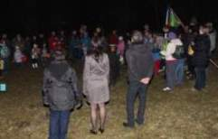
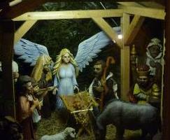
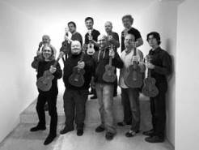

Kulturní akce v obci
Sedmnáctý listopad
V symbolickém čase - 17.17 hodin - se skauti a veřejnost setkali u skautské lípy pod Vyhlídkou, aby si připopmněli události roku 1989 a, jak vždy dodává starosta, také události roku 1939. Účastníci vzpomínkového večera mohli slyšet Hutkovu Náměšť nebo Krylovu Demokracii. Závěrem jsme společně zapěli Československou hymnu a s přáním lepších zítřků se rozešli do svých domovů.
Vánoce v Brněnci
V sobotu 6. Prosince podvečer jsme v zahradě Obecního úřadu přivítali vánoční čas. Přes nepřízeň počasí přilákal program této akce po loňské pauze (z důvodu rekonstrukce OÚ) spoustu spoluobčanů, kterým nevadilo bláto ani drobné mrholení a kteří měli chuť se vzájemně setkat. Po úvodním slovu pana starosty zazněly slavnostní fanfáry, poté vystoupili žáci ZŠ, svou řeč pronesl Mikuláš, který se svými pomocníky sestoupil z balkónu mezi děti a za básničku či písničku je obdaroval perníčky. Pro děti byla také připravena pošta Ježíškovi a opékání párků. Adventním hostem byla Mgr. Alžběta Boucníková se svým krásným pěveckým vystoupením, během něhož se rozsvítil vánoční strom a betlém. Slavnostní atmosféru navodily vánoční melodie hudebního seskupení Malohanačka. V závěru programu se vypouštěly bálonky štěstí s dopisy dětí přímou cestou do nebe.
Ukulele Orchestra jako Brno
V pátek 28. Listopadu 2014 se v Lidovém domě rozezněly známé rockové a popové písničky v úpravách pro havajský nástroj ukulele. Koncert se mimořádně vydařil. Všichni odcházeli domů nadšení a plní dojmů. Hudebníci si publikum velice chválili. Vzkazují, že se jim málokde hrálo tak báječně a chtějí přijet znovu. Vypadalo to, že i vy jste se bavili, tančili a zpívali a mnozí z vás už nyní chtějí, aby Ukulele Orchestra přijeli opět. Rádi uspořádáme koncert znovu. Takže pro ty z vás, kteří jste na koncertu nebyli: je pravda, že jste o hodně přišli, ale nevěšte hlavy, akci určitě zopakujeme. Děkujeme všem, kteří tam byli. Pomohli jste ostatním prožít jeden krásný večer a to se počítá.